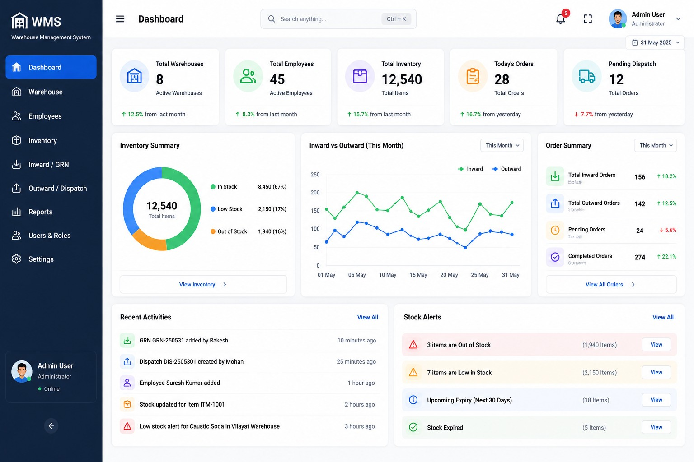

MODULE 01
WMS Dashboard
Centralized visibility for warehouse operations, inventory information and key activities.
Back to WMS
Centralized visibility for warehouse operations, inventory information and key activities.
Back to WMS
Understand important stock and inventory information at a glance.
Keep warehouse activity organized in one operational view.
Present key warehouse information clearly for daily decisions.